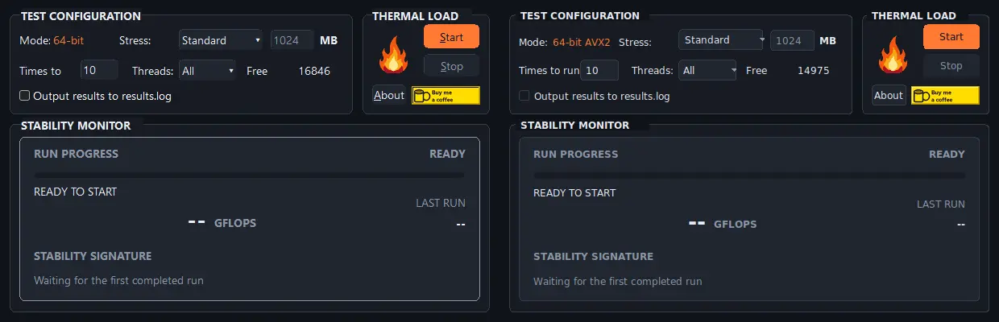

Set the pressure.
Choose the memory load, run count, and threads that fit the check you want to perform.
OPEN SOURCE · WINDOWS & LINUX · V3.1.0
A compact, native stability test that repeats a demanding numerical workload and checks whether every completed run agrees.
No installer. One executable per platform. x86-64 only.

01 / THE METHOD
GFLOPS tells you how fast the work ran. The stability signature tells you whether the completed runs produced the same numerical result.
Read the full methodologyChoose the memory load, run count, and threads that fit the check you want to perform.
The assembly numerical workload runs in memory through the best supported SSE2, AVX, or AVX2 path.
The first completed run establishes a reference signature. Every later run must match it to pass.
02 / THE MONITOR
Progress, elapsed time, throughput, and the residual signature stay visible in one compact window. A stopped run is never presented as a pass.

03 / TWO BUILDS, ONE WORKLOAD
Windows and Linux use the same in-process numerical assembly sources. Each frontend is native to its platform, with matching geometry and run-state presentation.
Windows 10 or 11. One unsigned executable; SmartScreen may prompt on first launch.
One native executable. Requires glibc, X11, and Xft on the host.
04 / GET STARTED
Official v3.1.0 binaries from GitHub Releases. No installer, account, or web benchmark.
chmod +x before running
Prefer to inspect first? Release notes and checksums ↗ Build from source ↗